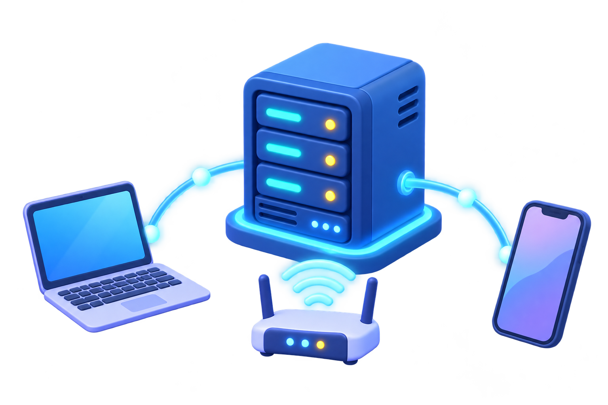

リクエスト
ブラウザやアプリがURLへ「これをください」とお願いを送ります。
SERVER / NETWORK / ADDRESS
画面から届いたリクエストを受け取り、データや画面を返すプログラムです。自分のPCでも、インターネット上でも動かせます。

01 / まず全体像
ブラウザやアプリがURLへ「これをください」とお願いを送ります。
サーバーはルールに従い、必要ならデータベースも参照します。
HTML、画像、またはJSONなどのデータを返します。
02 / LOCAL & LAN
localhost は今使っているPC自身です。サーバーを起動したPCだけからアクセスできます。
http://localhost:3000
同じWi-Fiに接続した端末では、PCのローカルIPアドレスを使います。Windowsのターミナルで ipconfig を実行し、IPv4アドレスを確認します。
http://192.168.x.x:3000
安全メモ：ローカルIPは同じLAN内だけの住所です。知らないネットワークで公開せず、Windowsファイアウォールの許可内容を確認してから試してください。
03 / DOMAIN & REMOTE
IPアドレスは通信先を示す数字の住所です。ドメインは、その数字に対応付ける人が読みやすい名前です。
203.0.113.10 → example.com
一般に「サーバー」と呼ばれるのは、インターネット上で常時動き、外部からのリクエストに応答できる環境です。公開にはHTTPS、認証、監視なども必要になります。